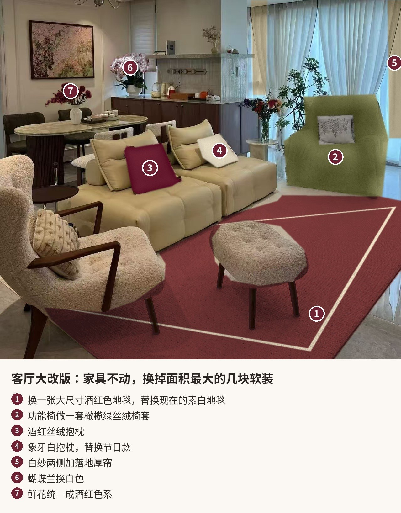
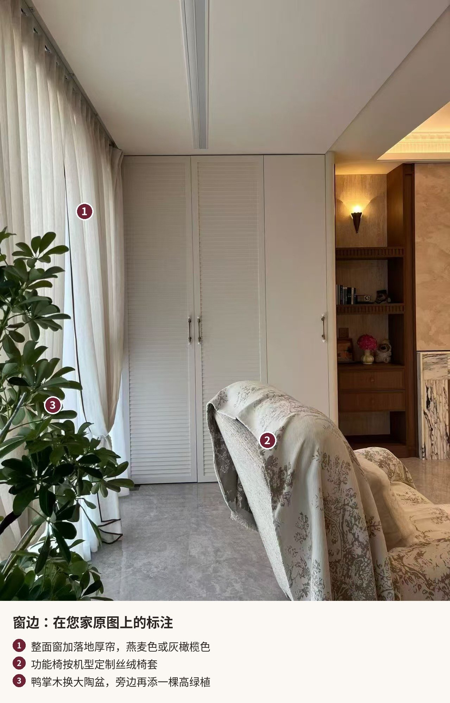
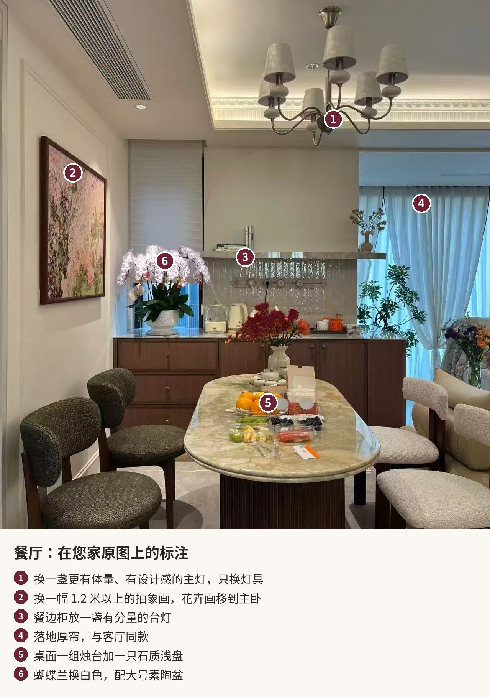
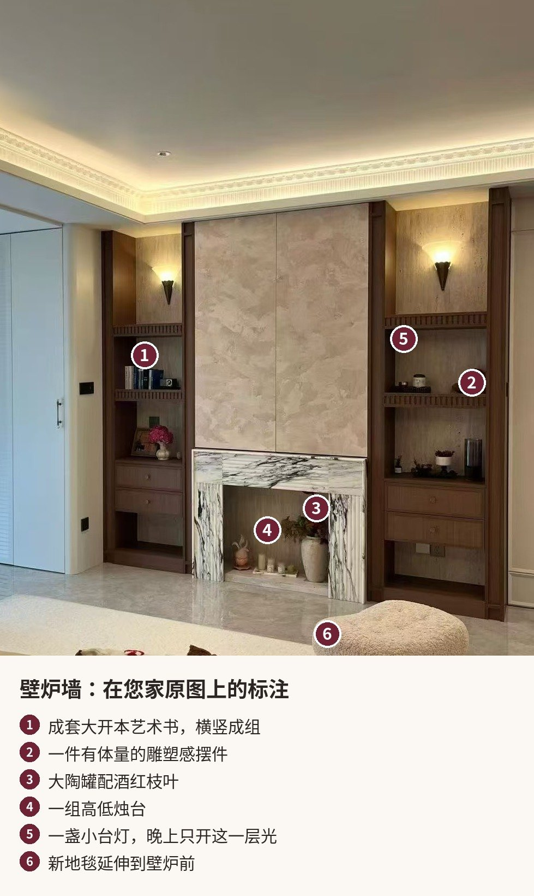
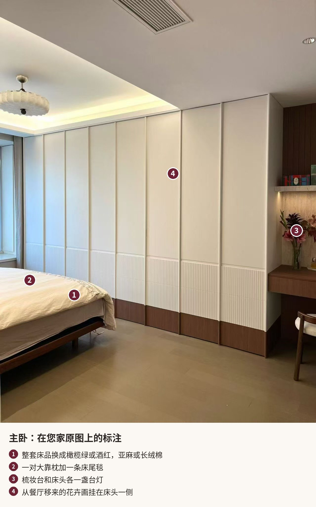

您家的软装优化方案：勃艮第与橄榄
2026 年 11 月 · 初稿，供您过目
您好。看完您家客餐厅、壁炉墙和主卧的 9 张照片，我先说感受：这是一套底子非常好的房子，看得出当初在硬装上花了心思。下面是我为您准备的软装方案，每条建议都附了理由，您可以挑认同的做，不认同的随时告诉我。
先说结论
您家一点也不土。硬装是这套房子最出彩的部分，完全不用动。您感觉到的那点“不对劲”，来自软装的三件小事：颜色还没有一条主线，个别摆件比空间显得年轻，灯光目前只有顶面一层。这三件事都好解决。
- 方向：在现有的奶油底色上，加入两种有分量的颜色，勃艮第酒红和橄榄绿，让家从“甜美的法式”走向“巴黎公寓式的从容”。这两个颜色本来就在您家：壁炉大理石的紫色纹理，餐椅和玉石桌面的绿。
- 做法：家具和硬装一样不动，只换面积最大的几块软装：地毯、窗帘、主灯、挂画、床品，再配上茶几和灯光。小摆件不是重点。
- 投入：控制在 3 万元以内，下面的清单合计约 2.95 万元。钱集中花在每天看得见、摸得着的大件上，材质选羊毛、亚麻、丝绒、石材这类真材料。金额是我的估算，确定方向后我再为您逐项核价。
一、我在照片里看到的
您家已经做得很好的地方
- 顶面石膏线加暖光灯槽，法式骨架已经成立。
- 胡桃木柜体、洞石背板、云纹饰面板，材质统一而且有分量。
- 紫脉白色大理石壁炉框，带槽纹，是全屋最有性格的一件东西。
- 椭圆玉石餐桌配槽纹底座，橄榄绿和奶白两种餐椅的混搭是对的。
- 白色百叶柜门、四叶草镂空门，细节克制。
可以更好的 9 个细节
| # | 照片里看到的 | 带来的观感 |
|---|---|---|
| 1 | 沙发、地毯、单椅、脚凳、墙面都是奶白米黄 | 明度很接近，缺一点深色来“压住”画面 |
| 2 | 同时有粉色蝴蝶兰、橙红花束、紫橙混色花束、向日葵、红叶 | 每一束都好看，放在一起颜色会互相抢 |
| 3 | 姜饼屋和圣诞树刺绣抱枕、层架上的小熊 | 很可爱，但和沉稳的石材木作不在同一种气质里 |
| 4 | 功能椅上披着朱伊纹盖毯 | 容易被看成防尘罩；花纹和花卉画、鲜花叠在一起略碎 |
| 5 | 照明以灯槽、吊灯、筒灯为主 | 光都在头顶，晚上少了层次，石材会显冷 |
| 6 | 壁炉两侧层架上是零星的小书、小摆件、小花 | 物件偏小偏散，这么好的层架没有被用足 |
| 7 | 餐边柜台面上有养生壶、水壶、茶具和轨道插座 | 日用电器占了全屋最好的一块展示面 |
| 8 | 客厅暂时没有茶几，地毯是素白的一块 | 沙发区少一个中心，家具之间联系偏弱 |
| 9 | 吊灯是大理石纹灯罩；窗边只有一层白纱 | 灯罩纹理和石材重复；窗边少一层有垂感的面料 |
二、我对您的理解
在动笔之前，我先想清楚这个家是给谁住的。如果有说得不准的地方，请您一定纠正我。
- 这个家是您的自我表达，不是样板间。小红书 2026 年度居住趋势叫“适我主义”，相关话题累计超过 626 万讨论、20.4 亿浏览，大家不再照搬“奶油风”“中古风”模板（界面新闻）。所以我不给您换风格，只把您已经拥有的好东西理顺。
- 它应该配得上您的阅历和判断力。贝壳研究院的数据里，38 个样本城市女性购房者占比从 2017 年的 45.54% 升到 2021 年的 48.65%（第一财经）。越来越多女性为自己置业，家也就从“温馨可爱”走向“有主见、有分量”。
- 它要能让您在高强度工作之后真正放松。一项住宅场景的虚拟现实实验里，带自然光和绿植的房间让受试者压力后的皮肤电导下降更多（−0.38 对 −0.19），血压没有差别（Frontiers in Virtual Reality 2025）。证据强度中等，但方向一致：窗边那棵鸭掌木请留着，晚上多用暖光。
- 您做产品，习惯“少而准、说得出为什么”。所以下面每条建议都带一条规则和出处。
三、行业趋势与标杆
| 趋势 | 依据 | 对您家意味着什么 |
|---|---|---|
| 去风格化混搭 | 上海家博会 2026 行业观察：纯法式这类单一风格在退场，混搭成为主流（CIFF） | 不再往“更法式”加码，而是加入现代和中古单品 |
| 全米色过时，颜色回归 | Homes & Gardens 把“全屋米色”列为 2026 该告别的做法（H&G） | 对应上面第 1 条：加一点深色就好 |
| 酒红、棕、橄榄成为“新中性色” | 多家 2026 趋势报道都点名 burgundy、chocolate brown、olive（Southern Living、Home Beautiful） | 点缀色的选择有行业背书，而且和胡桃木天然相配 |
| 暖白仍是客厅底色 | Fixr 2026 专家调查：73% 的专家认为客厅用柔和或暖白色最保值，56% 把健康疗愈设计列为首要趋势（Fixr） | 奶油底色不用改，只加深色 |
两位可对标的法国设计师
- Joseph Dirand：古典线条加极简，偏单色，重用纹理强烈的大理石，靠少数细节点活空间（Wikipedia）。您家的石膏线加紫脉大理石正是这条路线，只差“少而准”的陈设。
- Pierre Yovanovitch：以克制和真实材料（木、石、金属）著称，当代艺术是空间的重要部分（1stDibs）。给我们的启发：用一两件有体量的雕塑感单品，替换一组小摆件。
四、设计概念：勃艮第与橄榄

- 60-30-10 配色法则：主色 60%、辅色 30%、点缀色 10%，点缀色放在抱枕、花器、画这类小件上（DesignFiles）。您家前两层已经有了，只差那 10%。
- 点缀色从硬装里取：这样新加的东西看起来像“本来就该在这”。
- 同色不同质感：丝绒、粗花呢、亚麻、圈圈绒、皮革叠在一起。同一种奶油色如果全是光滑面，质感会被削弱；换成不同面料，同样的颜色会显得贵很多。
五、方案：换掉面积最大的软装
抱枕和摆件只占画面的一成。真正决定一个房间气质的，是地毯、窗帘、灯、画和床品这几块“大面积”。所以这套方案把预算集中在这里，每一件都选经得起细看的真材料。
下面五张都是在您家的原图上直接标注的。客厅一张做了换色，方便您感受方向；颜色是程序处理的，质感以实物为准。
客厅

- 地毯是第一件要定的。选手工或手工感的羊毛地毯，约 2.5×3.5 米，酒红或砖红色，纯色或只带一道细边。尺寸要够大，至少压住沙发和单椅的前腿，家具才会成为一组（Houzz）。
- 茶几：洞石或大理石，圆形或椭圆，长度约为沙发的 2/3，高度与坐垫齐平（Havenly、Apartment Therapy）。石材和壁炉、餐桌呼应。
- 功能椅：按机型定制一套橄榄绿丝绒椅套，把全屋最“不搭”的一件变成一个漂亮的色块。
- 抱枕和盖毯：地毯用了深色之后，沙发上只留一只酒红，其余用象牙白、橄榄绿和细条纹，共 5 只，配羽绒芯；再搭一条羊毛盖毯。
窗边

- 落地厚帘：白纱保留，外面加一层亚麻混纺或丝绒厚帘，燕麦色或灰橄榄色，整面窗都挂，从顶到地。窗帘是第二大面积，而且是竖向的，最能把层高和法式感拉出来。
- 绿植：鸭掌木换一只大陶盆，旁边再添一棵 1.8 米以上的，一高一低成景。
餐厅

- 主灯：现在的吊灯相对餐桌偏小。换一盏更有体量的，石膏、手工玻璃或黄铜材质都可以，只换灯具、不动吊顶。灯底离桌面 76–91 厘米（5280 采访设计师）。
- 挂画：换一幅 1.2 米以上的抽象画，原创或限量版画，画的中心离地 145–152 厘米（Martha Stewart）。现有的花卉画移到主卧，那里更适合它。
- 台面：水壶和养生壶收进柜内，放一盏有分量的台灯。
壁炉墙

- 每层只放一组，占 1/2 到 2/3，其余留白（Dallas News 采访设计师）。
- 用大件换小件：成套的大开本艺术书、一两件雕塑感摆件、大陶罐。您的专业书也请上架。
- 左右不要完全对称，重心一高一低。
主卧

- 床品：床是卧室里最大的一块面料。整套换成橄榄绿或酒红，亚麻或长绒棉，配一对大靠枕和一条床尾毯。
- 灯：床头和梳妆台各一盏台灯，睡前不开主灯。
灯光
- 三层光：顶面（已有）、中位（壁灯已有，加画灯）、低位（落地灯、台灯）。分层照明是通用做法（DesignFiles）。
- 色温统一到 2700K 左右，晚上只开中低位灯（AARP 采访设计师 Hans Lorei）。
六、清单与预算：3 万元以内
金额为人民币估算，按有设计感、材质扎实但非奢侈品牌的价位。全部是软装和灯具，不动家具和硬装。
| # | 物品 | 要点 | 估价 |
|---|---|---|---|
| 1 | 客厅羊毛地毯，约 2.5×3.5 米 | 酒红或砖红，纯色或细边；手工或手工感 | 5,500 元 |
| 2 | 客厅整面落地厚帘 | 亚麻混纺或丝绒，定高定宽 | 4,500 元 |
| 3 | 餐厅主灯 | 石膏、手工玻璃或黄铜，有体量 | 3,500 元 |
| 4 | 茶几 | 洞石或大理石，圆形或椭圆 | 3,000 元 |
| 5 | 大幅抽象画，带框 | 1.2–1.5 米，原创或限量版画 | 3,000 元 |
| 6 | 落地灯 1、台灯 3、画灯 1 | 黄铜或古铜，亚麻灯罩 | 3,000 元 |
| 7 | 主卧床品一套、大靠枕、床尾毯 | 亚麻或长绒棉 | 2,500 元 |
| 8 | 抱枕 5 只含羽绒芯，羊毛盖毯 1 条 | 丝绒、羊毛、亚麻混搭 | 1,500 元 |
| 9 | 陈设：大陶罐、雕塑摆件、烛台、艺术书 | 少而大，每层一组 | 1,500 元 |
| 10 | 功能椅定制丝绒椅套 | 按机型打版 | 800 元 |
| 11 | 大绿植 1 棵，大陶盆 2 只 | 1.8 米以上 | 700 元 |
| 合计 | 29,500 元 | ||
建议的下单顺序：先定地毯，再定窗帘，这两件定了全屋的颜色；然后是主灯和茶几；画和陈设放在最后，等前面的东西到位后再挑，最不容易出错。
不花钱的准备工作可以现在就做：把节日抱枕和花纹盖毯收起来，水壶进柜，鲜花统一成一个色系。
七、想和您确认的几件事
- 勃艮第加橄榄这个方向，您看着会不会觉得偏沉？如果想轻一点，我准备了备选：雾蓝加焦糖。
- 披着盖毯的那把椅子，是按摩椅或电动功能椅吗？如果是，我按机型为它定做椅套；您也可以考虑把它请进卧室。
- 壁炉上方的云纹饰面板后面，是电视或投影吗？这决定上方还能不能挂东西。
- 小熊和节日抱枕里，有没有对您特别有意义的？有的话我们一定保留，只是给它们换个更合适的位置。
- 3 万元以内这个范围合适吗？您确认后，我把清单细化到具体单品和购买链接。
这是初稿。哪里不喜欢、哪里想多一点，您直接说，我来改。
来源
- 《2026 小红书年度居住趋势》“适我主义”，界面新闻
- 贝壳研究院女性居住消费调查，第一财经；另见 界面新闻
- CIFF 上海家博会 2026 行业趋势
- Homes & Gardens：2026 该告别的设计；2026 趋势总览
- Southern Living：2026 的浓郁中性色；Home Beautiful：The Paris Edit
- Fixr 2026 室内设计与色彩趋势报告
- 住宅亲生物设计与压力恢复，Frontiers in Virtual Reality 2025；反例见 PubMed 31625764（心率变异性无差别，但主观评价更好）
- 设计法则：DesignFiles、Martha Stewart、Havenly、Apartment Therapy、Ideal Home、Dallas News、5280、AARP、Houzz
- 设计师：Joseph Dirand、Pierre Yovanovitch